Ricerca campagne
Il pulsante Aggiorna massivamente sopra i risultati apre la modalità Estrattore. L’Updater lavora sulle campagne che avete appena estratto con i vostri filtri.
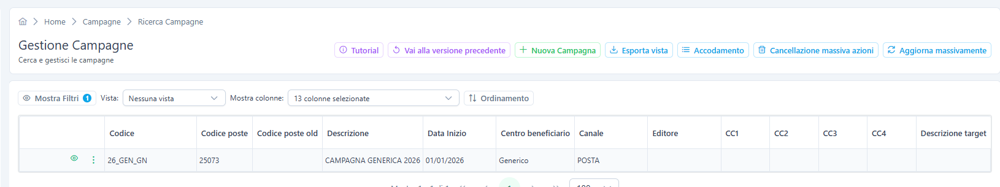
Nuova funzionalità
Aggiornamento massivo in Mentor
Aggiorna lo stesso campo su più record in una sola operazione. Scegli quali record modificare, imposta il nuovo valore e controlla l’esito in Mentor.
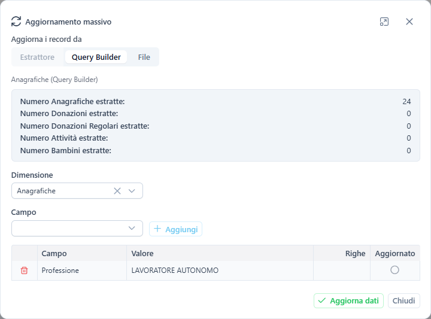
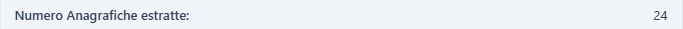

Guarda come aggiornare i record con Estrattore, Query Builder e File.
L’Updater è una finestra di Aggiornamento massivo. Il principio è semplice: prendete un insieme di elementi, scegliete un campo e gli assegnate un nuovo valore. Mentor lo applica a tutti gli elementi in una sola operazione.
Potete aprirlo da due punti diversi. Il punto di partenza determina le modalità a disposizione.
Il pulsante Aggiorna massivamente sopra i risultati apre la modalità Estrattore. L’Updater lavora sulle campagne che avete appena estratto con i vostri filtri.

Se invece aprite la voce Updater dal menu, potete usare il risultato del Query Builder oppure caricare un file.
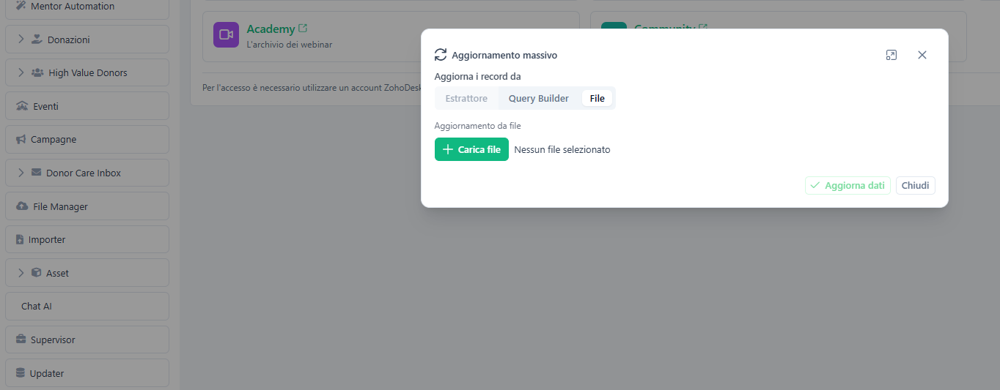
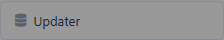
In alto vedete Campagne estratte con il numero di elementi coinvolti. Sono esattamente quelli della ricerca che avete appena fatto, con gli stessi filtri.
Controllate sempre questo numero prima di procedere. Se vi aspettavate 50 campagne e ne vedete 5.000, fermatevi e rivedete i filtri.
Aprendo l’Updater dal menu e scegliendo Query Builder, Mentor mostra subito quanti elementi ha estratto il vostro ultimo Query Builder, divisi per dimensione: Anagrafiche, Donazioni, Donazioni Regolari, Attività e Bambini.
Scegliete la dimensione da aggiornare. Solo dopo questa scelta compare l’elenco dei campi modificabili, perché ogni dimensione ha i suoi.
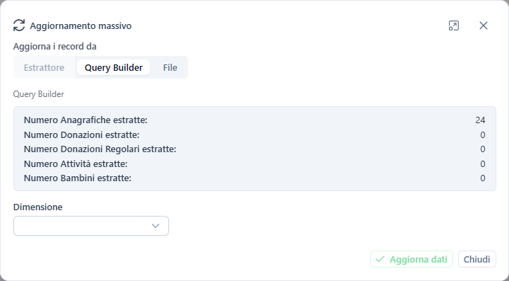
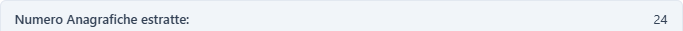
In Estrattore e Query Builder potete aggiornare più campi nella stessa operazione.
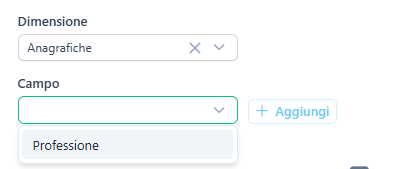
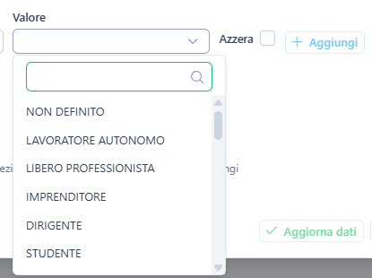
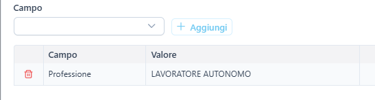
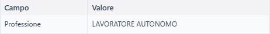
| Tipo di campo | Cosa vedete | Esempio |
|---|---|---|
| Numero intero | Casella che accetta solo cifre e segno meno | 123 |
| Numero decimale | Casella con la virgola come separatore | 12,50 |
| Data | Calendario | 11/10/2026 |
| Ora | Selettore dell’orario | 09:30 |
| Sì/No | Interruttore | Sì |
| Testo | Casella libera | Qualsiasi testo |
| Valore da tabella | Elenco a tendina con ricerca | Una professione, una provincia |
Se sbagliate formato, ad esempio scrivete «12.50» invece di «12,50», Mentor ve lo segnala e il pulsante Aggiungi resta disattivato.
La casella Azzera serve a svuotare il campo su tutti gli elementi. Il valore viene riportato al default del suo tipo, cioè zero per numeri e date, vuoto per i testi, «No» per i Sì/No.
Se aggiungete di nuovo un campo già presente in griglia, il nuovo valore sostituisce il precedente. Per togliere una riga basta il cestino a sinistra.
La modalità File serve quando ogni elemento deve ricevere un valore diverso. Preparate un file CSV, XLS o XLSX con due colonne.
La prima riga è l’intestazione e viene ignorata. Caricate il file, Mentor vi dice quante righe valide ha trovato. Poi scegliete la dimensione e il campo da aggiornare.
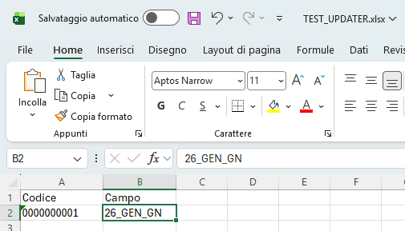
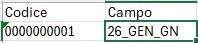

Premendo Aggiorna dati compare sempre una conferma. Leggetela con attenzione, perché ricorda quattro cose importanti.
Dopo la conferma, in Estrattore e Query Builder la griglia diventa un registro in tempo reale. Per ogni campo vedete un’icona: rotellina mentre lavora, spunta verde se è andato a buon fine, croce rossa in caso di errore. La colonna Righe indica quanti elementi sono stati aggiornati.
Un errore su un campo non blocca gli altri. Alla fine un messaggio riassume l’esito complessivo. Mentor aggiorna anche data e utente di ultima modifica degli elementi.
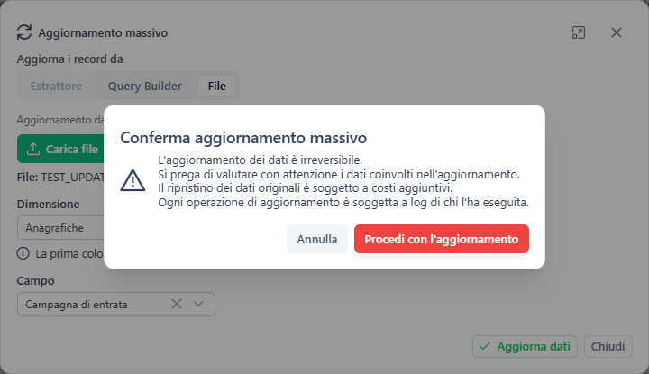
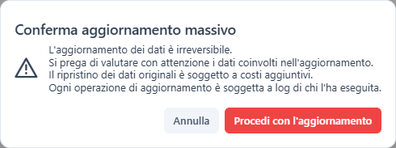
No, l’operazione è irreversibile. Il ripristino dei dati originali è possibile solo con un intervento dedicato, che ha costi aggiuntivi.
Manca il campo, manca il valore oppure il valore non è nel formato giusto. Controllate il messaggio sotto la casella.
No. Gli altri campi sono stati aggiornati comunque. Riaprite l’Updater e ripetete solo il campo in errore.
La virgola, come in Excel italiano. Ad esempio 12,50.
Nella versione mostrata, dalla ricerca campagne è disponibile la modalità Estrattore. Per Query Builder e File usate la voce Updater nel menu.
Sì. Ogni operazione viene registrata con il nome dell’utente. Sui record vengono aggiornati anche la data e l’utente di ultima modifica.